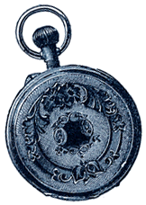
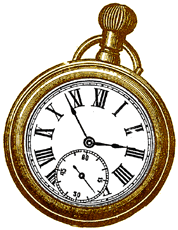

1998: A Temporary Autonomous Zone
1998: A Temporary Autonomous Zone
|
Major Transits of the Pre-Millennial Chaos

By Antero Alli The year 2000 splats a massive watermark in the minds of billions of people, whether we as individuals believe that or not. My own assumption is twofold: that the year 2000 is not very important and it is very important. Like life itself, it should be taken very seriously and not very seriously at all. But if the collective believes that the year 2000 is very important, then, as its members, each of us will be subject to--in varying degrees--waves of collective reactions tantamount to a mass hallucination. A cosmic tsunami is coming, and it is us! What kinds of collective reactions might we expect? Hysteria? Rage? Panic? Widespread, unbridled lust? My guess is that much of our pre-millennial chaos, with its incumbent anxiety, will be generated by the collective psyche reacting to itself. We live in exceedingly mental times. Our current media-saturated consumer culture has given us plenty of practice reacting to our own (and others') mediated projections of reality via advertising, the entertainment empire, the Internet. We have been developing very sophisticated addictions for simulations of real life experience. I think the year (and the number) 2000 represents a kind of full-tilt boogie mode to the collective psyche. Massive amounts of energy will probably be raised to party-hearty into the 21st century. Whether you party to escape the reality of your life or to celebrate it will say a lot for the kind of person you have become and/or are becoming. These are crazy-making times. People will either flip out or flip in; go out of their minds or learn to go beyond the mind. In my calendar, 1998 marks the last year to make up your mind about which direction you're going. Jupiter in Pisces: Expanding into the Abyss In these times of accelerating uncertainty, it's easy to lose purpose and flail about in meaningless, circuitous activity. If ever there was a time to renew our personal and collective vision of unity, it is now--not 2000. As an archetype, Pisces might symbolize the most receptive state of human perception; Pisces knows how to lay low, listen, and wait for a sign. Pisces also marks the end of a grand cycle, bringing with it the dissolution of what went before. When Jupiter last entered Pisces (1986), an inflated Reaganomics crested with the entrepreneurial, prosperity-minded "New Age" movement; truly an expanded, unified vision for its times. As Jupiter returns to Pisces (Feb. 5, 1998-Feb. 13, 1999), we embark on the end of another era of endless abundance. The sign that Jupiter is in, natally or by transit, symbolizes a philosophical style; how one tends to define and know truth. Aries knows it through action, Taurus through the senses, Gemini via ideation, etc. Jupiter in Pisces tends to know truth by embracing all truths into one unifying vision, philosophy, or world order. Sometimes this happens at the cost of blurring those relevant cultural boundaries that naturally express conflicting values. Note the so-called multi-culturalism movement's threat to sustaining any indigenous culture's distinct traditions. Is multi-culturalism a kind of covert racism in this way or a desperate strip-mining of one culture's hard-earned heritage to compensate for the bankruptcy of another? Is the idea of a one world order, or religion, possible? Is it even necessary? From a more mystical vantage, Jupiter in Pisces sets up a time frame for an expansion of spiritual energies. As such, 1998 may be an uplifting year for those souls who are brave enough to expand their consciousness by cultivating more intimacy with the void, that profound receptivity at the ground of our being. To the mystic in us, Jupiter in Pisces signals a time for expanding into the abyss. Saturn in Taurus: Build the Ark, Survive the Floods During these rapidly shifting times, people search for remnants of lasting value, consistencies in the flux, and patterns in the chaos. Yet in this millennial drift of increasing homelessness and neo-nomadism, people may also shy away from making firm commitments to anything new, while clinging tenaciously to what they already have. With so much transit, who knows when the rug will be pulled out from beneath us? Yet many of us do not want to be forced into more conservatism, cynicism, or paranoia, either. What then can be trusted? Simply put: change. Enter Saturn in Taurus, a time for taking responsibility to structure our own security, where no security exists. The last time Saturn entered Taurus (May 1969 to mid-June 1971), our society underwent a counter-cultural revolution. New values that were radically alternative to mainstream mores emerged and were consolidated by an autonomous subculture (later to be assimilated by the mainstream). As Saturn returns to Taurus (June 10, 1998-Aug. 10, 2000) our society is experiencing enough real change to merit a redefinition of stability. How else are we to endure and survive the riptide of a cosmic tsunami symbolized by Neptune in Aquarius? Saturn in Taurus means that now is the time to build the ark of your choice to float and ride this turbulence to the distantly close 21st century shores. Important choices must now be made. Amidst the wood-drift of a shipwrecked, hypermedia culture, we need to look around and ask ourselves: What exactly is worth saving? How can true value be defined in a consumer culture willing to say anything to sell a product? With saturnine grit, we go nose to the grindstone and work it out. Build the ark, survive the floods. When we cannot find lasting value in anything, it is time to create that for ourselves. Neptune in Aquarius: A Troubling Enlightenment Chaos is accelerating; there is no escaping the momentum. Yet there are productive ways to remain responsive to the undercurrents. The front lines of a cultural revolution await those talented enough to turn pre-millennial bedlam into art. Those who can see through all the hype and advertising are in charge of making their own media to tell the truth as they see it. For those empaths who see too much and can no longer endure the urban insanity, there are permaculture homesteads from which to transmit eco-terrorist signals; we will listen for the communiques. The last time Neptune passed through Aquarius (between 1835 and 1849), America began awakening from its nightmare of black slavery (note the Amistad mutiny). Supported by the poetic Transcendentalism of Emerson, Hawthorne, et al, autonomous subcultures also emerged as backwoods utopian communes successfully challenged consensus values (via Owens, Brooks, the Shakers, etc). Fifteen years earlier (1820-23), Neptune conjuncted Uranus in Capricorn, a conjunction reoccurring next in 1991-95. If history repeats itself, the collective may be in its next major cycle of social enlightenment: outgrowing obsolete bigotries, gender and family roles, religious morals, and the politics of how a government should run itself. Neptunian dissolution of social (Aquarian) structures won't come easily. An exposure to massive suffering is inevitable. As more borders, barriers, and facades collapse, torrents of deep collective pain surface. This hurt must be faced with compassion, for it expresses a species deeply divided against itself. And what is the cause of all this suffering? Isolation and spiritual amnesia. We forgot that the illusion of our separateness was just that: an arbitrary mental construct. The cause of our suffering stems from an avoidance of relationship: with ourselves, each other, the planet, and with the cosmos. The Internet and the Collective Dreambody Neptune's last passage through Capricorn (Jan. 20,1984-Jan. 29,1998) coincided with a gradual erosion and softening of previous consensus definitions for success, fatherhood, our awareness of time and other saturnine (Capricorn) reality structures. Many people traded higher-paying jobs for lower income work in which they were happier. The online computer industry encouraged employees to work out of their homes, allowing new fathers to share household chores and time with their kids. The archetypal shift from Capricorn to Aquarius enacts a decentralization of power, an undoing of previously sanctioned hierarchies of status and position to make space for more egalitarian values. If Capricorn stood for the CEO and Aquarius the company, Neptune in Aquarius might mark an era of massive redistribution of wealth and power from the executive branches down to and throughout the collective body and roots. The Web is already a potent medium for implementing this process and Neptune in Aquarius is an obvious astrological metaphor for the Internet itself: non-local time and space (Neptune) accessed by the collective mind (Aquarius). The Internet gives form to a kind of planetary nervous system, if you consider the analogy of each computer terminal acting like an interdependent neuron busily absorbing, storing, and transmitting energy and/or information with other neuron/terminals. As more consciousness is invested in the non-locality of Internet activity, a peculiar thing tends to happen. The collective mind substantiates its own kind of metaphysical double, or mirror, of itself and the planetary nervous system becomes self-aware. If this sounds weird, that's because it is weird; never before has something of this kind happened in recorded history. It's as if the collective is birthing its own kind of dreambody and, this dreambody has begun to awaken. Wake up and dream!  Aquarians on Neptune: The Extraterrestrial Factor The Neptune in Aquarius era might also be interpreted as a time when the collective (Aquarius) warms up to more direct contact with alien or extraterrestrial life (Neptune). Before exploring this angle, I think the term extraterrestrial should be looked at in context to the time-period we live in. What was considered alien to the collective mindset of 1835 may be quite different from the kind of expectations people have today. The last time Neptune was in Aquarius, photographic and recorded sound technologies were in their infancy. Now, there are enough Hollywood sci-fi scenarios--from the harmless 1960s TV show My Favorite Martian to the horrific Alien film series--to suspend our disbelief about almost any alien life form imaginable. Is there anything left to shock us? I sure hope so. The greatest shock of all might be the gradual revelation that the aliens have landed and they are us. Bear with me as I suggest the preposterous in an attempt to tell the truth as I see it. As individual and collective consciousness expands by interacting with non-locality (via the Internet or meditation or any spiritual practice involving intimacy with the void), its central nervous system(s) grow self-aware and begin functioning in more evolved ways than those nervous systems coccooned in the chrysalis of sleep. Leading proponents of the so-called Human Potential Movement of the '70s knew this all along but were mocked and devalidated by a greater majority of cynical materialists. I think the cynics may have acted as an emergency brake on a runaway boxcar. Perhaps the species was not then ready to awaken to our alien heritage; maybe we are now.
Antero Alli is an author, astrologer, and mediamaker living in the San Francisco Bay Area. You can read more about him by visiting his website at www.labridge.com/z/wiseguy/
Back to the Table of Contents.
Surf the Boulevards network
to other great alternative
content sites.
|